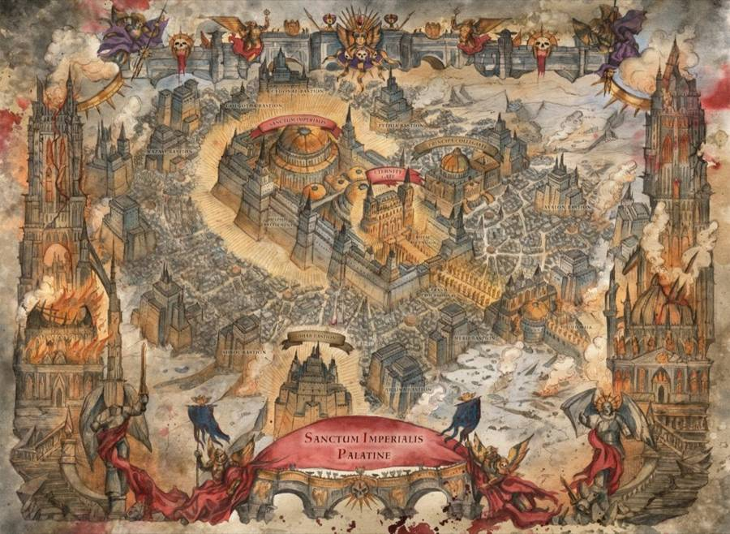

Sanctum Imperialis
| Sanctum Imperialis | |
|---|---|
| The inner palace of the Emperor of Mankind | |
 The Sanctum Imperialis Palatine and its walls, from an Imperial Fists plan of the Siege | |
| Location | Centre of the Imperial Palace, Terra |
| Type | Inner palace and fortress |
| Built | Late Unification Wars and Great Crusade, M30 (estimated) |
| Contains | The Throne Room and the Golden Throne; the Eternity Gate; quarters of the Adeptus Custodes; the Imperial Dungeon beneath |
| Occupant | The Emperor of Mankind (on the Golden Throne since 014.M31) |
| Guard | Adeptus Custodes; Sisters of Silence |
| Notable events | |
| Siege of Terra (013–014.M31); interment of the Emperor (014.M31); audience of Roboute Guilliman (999.M41) | |
The Sanctum Imperialis, in full the Sanctum Imperialis Palatine, is the innermost part of the Imperial Palace on Terra. It is the fortress-palace of the Emperor of Mankind and contains the Throne Room, where the Emperor has sat on the Golden Throne since the end of the Horus Heresy. It is entered by the Eternity Gate, and it is guarded by the Adeptus Custodes and the Sisters of Silence, who admit few outsiders.[1][2]
During the Siege of Terra in 014.M31 the Sanctum was the last line of the loyalist defence. Daemons were loosed inside it, and the Blood Angels of Sanguinius held the Eternity Gate until the Emperor left the Palace to face Horus. Since the Emperor's interment on the Throne it has been the holiest place in the Imperium.[2][3]
Description
[edit]The Sanctum stands at the centre of the Palace, inside rings of walls and bastions. Its buildings include the halls of the Custodes, the chambers of the Emperor's household and the great approaches to the Throne Room. In front of the Sanctum, the Delphic Battlement guards the Eternity Gate.[1]
Beneath the Sanctum lies the Imperial Dungeon, a system of vaults, tunnels and cells in which the Emperor built the gateway to his project in the Webway before the Heresy. The workings were wrecked in 012.M31 when Magnus the Red broke into them, and they were sealed after the Siege.[2]
Eternity Gate
[edit]
The Eternity Gate is the great gate of the Sanctum. It is carved with scenes from the Emperor's life and the Great Crusade, and pilgrims and envoys approach it on their knees up a long road of stairs and corridors. Only a few of the many millions who reach Terra each year are allowed to pass it.[1]
Throne Room
[edit]The Throne Room lies at the centre of the Sanctum. It holds the Golden Throne, the machine of gold and adamantium that keeps the Emperor's body between life and death. It is served by tech-priests of the Adeptus Mechanicus, by the Custodes, and by the psykers whose souls are consumed each day to feed the Astronomican.[1][4]
History
[edit]Construction
[edit]The Sanctum was begun in the last years of the Unification Wars, on the site of the fortress from which the Emperor directed the conquest of Terra, and was enlarged during the Great Crusade. No exact date survives.[1][a]
Siege of Terra
[edit]The Emperor withdrew into the Sanctum after the failure of the Webway project in 012.M31, and the regent Malcador the Sigillite took his place on the Throne to hold shut the breach that Magnus had made. When the traitors reached Terra in 013.M31, the Sanctum became the core of the defence planned by Rogal Dorn.[2][3]
By the last days of the Siege in 014.M31, the outer walls had fallen and the defenders had been pressed back to the Sanctum. The warp had thinned so far that daemons appeared inside its halls, and the Captain-General Constantin Valdor and the Custodes hunted them through the Emperor's own chambers. Sanguinius and the Blood Angels held the Delphic Battlement and the Eternity Gate. When Horus lowered the shields of the Vengeful Spirit, the Emperor left the Sanctum with his companions to board the flagship, where Horus was killed. Malcador died on the Throne in the same campaign.[3][2][b]
Interment of the Emperor
[edit]The Emperor was carried back to the Sanctum, mortally wounded, at the end of 014.M31 and placed on the Golden Throne. The Throne Room was sealed, and his attendants have kept their watch since. The Sanctum was restored during the reconstruction of the Palace in the decades after the Siege.[1]
Later history
[edit]Through the following ten thousand years the Sanctum has been closed to all but a few. In 546.M32, during the Beheading, the killings of the High Lords reached across the Palace, but the Sanctum itself was not entered. In 999.M41 the restored primarch Roboute Guilliman came to Terra at the end of the Terran Crusade and was received in the Throne Room by the Custodes. He stood before the Emperor, and left to take up the office of Lord Commander of the Imperium and begin the Indomitus Crusade.[5][1]
Timeline
[edit]| Date | Event |
|---|---|
| Late M30 (estimated) | Sanctum built at the heart of the Palace |
| 012.M31 | Magnus breaks into the Webway workings; Malcador takes the Throne |
| 013.M31 | Traitors reach Terra |
| 014.M31 | Daemons inside the Sanctum; Sanguinius holds the Eternity Gate; the Emperor boards the Vengeful Spirit |
| 014.M31 | The Emperor placed on the Golden Throne |
| 999.M41 | Roboute Guilliman received in the Throne Room |
See also
[edit]Notes
[edit]References
[edit]- ^ a b c d e f g Codex Imperialis (rev. 980.M41). Adeptus Terra.
- ^ a b c d e Chronicles of the Heresy (sealed). Logos Historica Verita, Terra.
- ^ a b c Records of the Palace Defence, 013–014.M31 (opened M41). Logos Historica Verita, Terra.
- ^ Liber Ecclesiasticus (M37). Adeptus Ministorum.
- ^ Records of the Indomitus Crusade (ongoing). Office of the Lord Commander.